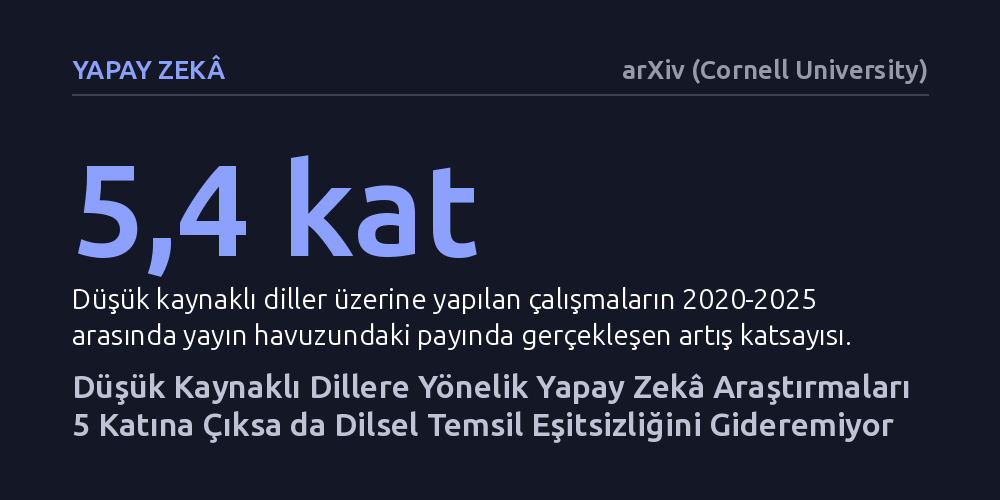

YAPAY-ZEKA · arXiv (Cornell University) · 2026-10-25
2020-2025 arasında yayımlanan 1.158 makaleyi inceleyen araştırmacılar, yapay zekâda az kaynaklı dillere ayrılan çalışmaların 5,4 kat arttığını belirledi. Ancak bu artış yeni dilleri kapsamak yerine önceden çalışılmış dillere yoğunlaşarak küresel dil eşitsizliğini çözemedi.
Yapay zekânın hızla çok dilli hale geldiği algısının aksine, artan akademik ilginin dilsel adaleti sağlamadığını ve milyarlarca insanın konuştuğu dillerin teknolojik olarak dışlandığını gösteriyor.

Büyük dil modellerinin yaygınlaşmasıyla birlikte yapay zekânın dünyadaki tüm dilleri zahmetsizce anlayabileceği ve dil engellerini ortadan kaldıracağı yönünde güçlü bir beklenti oluştu. Son beş yılda özellikle az kaynaklı diller üzerine yapılan bilimsel yayın sayılarında dikkat çekici bir patlama yaşandı. Ancak bir teknolojinin vitrinde çok dilli görünmesi, yeryüzündeki binlerce farklı dilin dijital dünyaya adil ve eşit biçimde dâhil edildiği anlamına gelmiyor.
Dünyada konuşulan binlerce dilin önemli bir kısmı, modelleri eğitmek için gereken dijital metin ve verilerden yoksun olduğu için 'düşük kaynaklı' olarak sınıflandırılıyor. Eğer akademik çalışmalar sadece zaten üzerinde durulmuş birkaç dile odaklanmayı sürdürüyorsa, devasa bir nüfus dijital geleceğin dışında kalma riski taşıyor. Bu araştırma, yayın sayılarındaki artışın arkasındaki gerçek kapsayıcılık tablosunu ortaya çıkarmak amacıyla yola çıkıyor.
Araştırma ekibi, 2020 ile 2025 yılları arasında doğal dil işleme alanının en saygın açık erişimli arşivi olan ACL Anthology'de yayımlanmış, hakem denetiminden geçmiş 1.158 makaleyi mercek altına aldı. Çalışmanın amacı, yayınların düşük kaynaklı dillere ayırdığı dikkati ve bu dilleri konuşan nüfusların ne ölçüde temsil edildiğini belirlemekti.
Yazarlar, yalnızca yayımlanan makale sayısını saymanın yanıltıcı sonuçlar doğuracağını fark ederek 'Dilsel Kapsayıcılık Çerçevesi' (LIF) adını verdikleri yeni bir değerlendirme modeli geliştirdi. Bu model kapsayıcılığı dört temel eksende ölçüyor: araştırma hacmindeki büyüme, kapsanan dil havuzunun genişlemesi, incelenen dillerin zaman içindeki devamlılığı ve dünya nüfusuyla dengeli bir dağılım adaleti. Böylece ilk defa bir çalışmanın sadece çok makale üretip üretmediği değil, dil çeşitliliğine gerçek anlamda katkı verip vermediği somutlaştırıldı.
Elde edilen sonuçlar, 2020 yılında yıllık 52 olan makale sayısının 2025'te 415'e yükseldiğini ve düşük kaynaklı dillerin yayın pastasındaki payının 5,4 kat büyüdüğünü gösteriyor. Ancak araştırmanın en sarsıcı bulgusu, bu hızlı büyümenin yeni ve hiç incelenmemiş dillere yayılmak yerine, daha önce de üzerinde çalışılmış dar bir dil grubunda kümelenmiş olmasıdır. Yani yayın adedi katlanırken temsil edilen dil yelpazesi aynı oranda genişlemedi.
Coğrafi ve nüfus dengesi incelendiğinde adaletsizlik daha da belirginleşiyor. Analiz edilen düşük kaynaklı dilleri konuşan insanların %64,1'i Asya'da bulunmasına rağmen, bu diller araştırma temsilinin yalnızca %46,7'sini alabildi. Buna karşılık Avrupa kökenli düşük kaynaklı diller, konuşucu nüfus oranlarına kıyasla 5,3 kat daha fazla temsil edildi. Ülke ölçeğinde ise Sahra Altı Afrika ve Güneydoğu Asya gibi dil çeşitliliğinin en zengin olduğu coğrafyalar en düşük dil kapsamı oranlarına sahip bölgeler olarak öne çıktı.
Çalışmanın ortaya koyduğu en net değerlendirme, incelenen hiçbir kıtasal bölgenin dört kapsayıcılık boyutunun tamamında başarılı bir sınav veremediğidir. Makale sayısındaki artış kendi başına teknolojinin daha kapsayıcı hale geldiğini kanıtlamaya yetmiyor; yazarların ifadesiyle salt araştırma büyümesi, dil teknolojilerinde adalet için güvenilir bir ilerleme göstergesi sunmuyor.
Bu tablo, geleceğin yapay zekâ altyapısının yalnızca ekonomik veya akademik gücü elinde bulunduran merkezlerin dillerine hizmet etmesi tehlikesini doğuruyor. Gerçek bir dilsel adalet sağlamak için araştırmacıların ve fon sağlayıcıların yayın sayısını hedeflemek yerine, özellikle Sahra Altı Afrika ve Asya'daki temsil edilmeyen yerel dillere yönelik sürekli ve hedefe yönelik yatırımlar yapması gerekiyor.